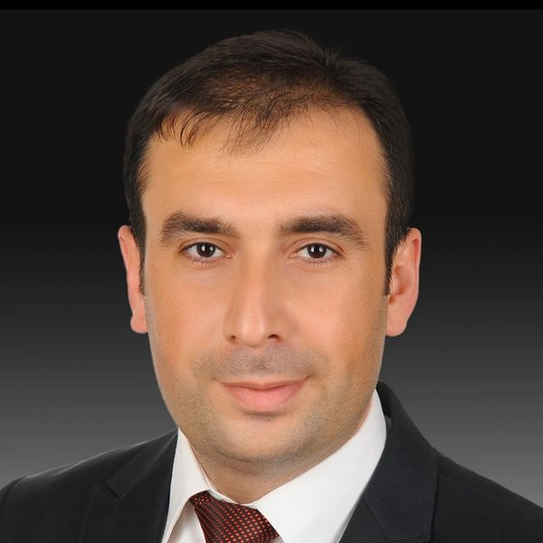

Sabit Ekin
Charlotte and Walter Buchanan Faculty Fellow
- Associate Professor, Engineering Technology and Industrial Distribution (ETID), and Electrical and Computer Engineering (ECE) (by courtesy)
- Founding Director, Generative AI Literacy Initiative, Texas A&M Institute of Data Science (TAMIDS)
- Director, Texas Wireless
- Research Coordination Fellow, Texas A&M Institute of Data Science (TAMIDS)
- Executive Committee Member, Intelligent Electromagnetic Sensor Laboratories (iEMSL)
- Affiliated Faculty, Center for Applied Communications and Networks (CACN), Texas A&M University System
- Texas A&M University, College Station, Texas
At a glance
Wireless communications and sensing researcher and inventor with nearly 14 years of post-Ph.D. experience in industry and academia. My work turns AI-enabled wireless sensing into deployed products, startups, and patents, and I lead Texas A&M’s campus-wide effort in generative AI literacy.
Career path
- Ph.D., Electrical and Computer EngineeringTexas A&M University
- Senior Modem Systems EngineerQualcomm
- Assistant/Associate Professor, ECEOklahoma State University
- Associate Professor, ETIDTexas A&M University
By the numbers
Research Award
Biosketch
Sabit Ekin is an Associate Professor of Engineering Technology and Industrial Distribution and, by courtesy, of Electrical and Computer Engineering, and the Charlotte and Walter Buchanan Faculty Fellow at Texas A&M University. He directs Texas Wireless and is the founding director of the Generative AI Literacy Initiative at the Texas A&M Institute of Data Science. His research spans wireless communications and sensing (mmWave, terahertz, optical, and satellite systems), non-contact health sensing, and the Internet of Things, with AI and machine learning throughout.
Before academia, he was a Senior Modem Systems Engineer at Qualcomm (2013–2016), where his work shipped in cellular modems used in Apple, Samsung, Google, and other devices and earned eight Qualstar Hall of Fame Awards. He was on the Electrical and Computer Engineering faculty at Oklahoma State University from 2016 to 2022, where he founded OKSat, Oklahoma’s first CubeSat program. He received the DOE Early Career Research Program Award (2023–2028) and is an IEEE Senior Member. He holds a Ph.D. in Electrical and Computer Engineering from Texas A&M University (2012), an M.Sc. in Electrical Engineering from New Mexico Tech (2008), and a B.Sc. in Electrical and Electronics Engineering from Eskisehir Osmangazi University (2006).
Recent highlights
- Named Charlotte and Walter Buchanan Faculty Fellow, ETID, Texas A&M.
- New NSF & Research Council of Finland award (2026–2029).
- Launched ENGR 689, a one-week College of Engineering Sprint Course on AI/ML.
- Invited featured article, Journal of Engineering Technology: “Artificial Intelligence in Engineering Technology: Opportunities, Challenges, and Future Outlook.”
- ETID Faculty Teaching, Research and Service Award.
- Top 5 most popular papers in reinforcement learning, IEEE Open Journal of the Communications Society.
- Texas A&M joins OpenAI’s NextGenAI consortium, featured in Forbes and Inside Higher Ed.
- U.S. Department of Energy Early Career Research Program Award (2023–2028).
Explore
Research
My research focuses on wireless communications and sensing systems, leveraging AI/ML methods to develop intelligent and adaptive engineering solutions.
Research areas, sponsors, and projects →Publications
Journal and conference papers, books, patents, and preprints, numbered as in my CV.
Full publication list →Leadership & honors
Building programs that put new technology into the hands of students, faculty, and industry.
Leadership, honors, and media news →Team
The Texas Wireless team: current students, alumni, and how to join.
Meet the team →Teaching
Course materials with interactive simulations, worked examples, and up-to-date content. Each course has its own site.
Courses →Outreach
Hands-on wireless technology for K-12 students, rural communities, and undergraduates.
Outreach programs →Contact
Office
Fermier Hall, 3367 TAMU466 Ross St, College Station, TX 77843
Prospective students and visiting scholars
Enthusiastic students and visiting scholars who would like to join our team are welcome to email me. Because of the volume of email, I may not reply to every inquiry; a lack of reply reflects team capacity and funding, not the merit of your application.